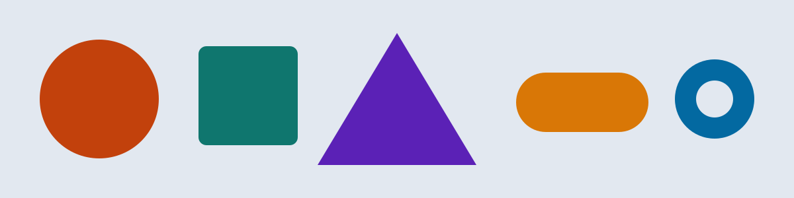

Shapes that resize and recolor
Four shapes jump to a new size and color at each breakpoint. The last one is different: it grows smoothly with the window because its size uses clamp().
Text boxes that change or hide
Each box below follows its own rule. Resize the window and watch which ones appear.
Always here
This box is visible at every screen size.
Phones only
You can see this because your screen is narrower than 600px. It disappears on larger screens.
Tablet and up
This box stays hidden on phones and appears once the screen is at least 600px wide.
Desktop only
This one waits until the screen is at least 1024px wide, then joins the row.
Text that swaps
Short text for small screens. With more room to work with, a larger screen gets a longer version of this message, with extra detail that would feel crowded on a phone.
What changes at each breakpoint
-
Mobile (under 600px)
Warm orange. Small shapes. Everything stacks in one column.
-
Tablet (600px and up)
Cool teal. Medium shapes. The menu and text boxes sit side by side.
-
Desktop (1024px and up)
Purple. Large shapes. Four text boxes share one row.